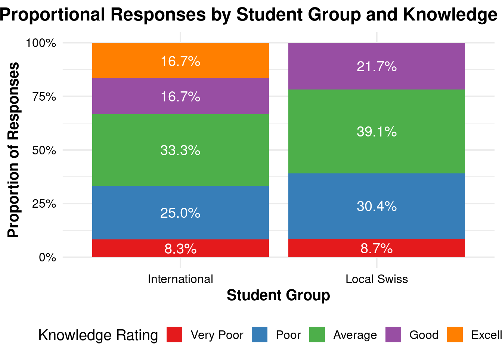
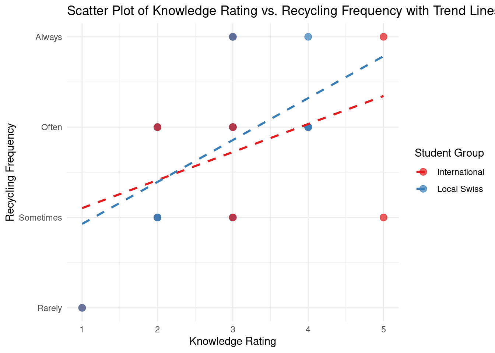

This study explores the differences in sustainability practices related to waste management between international and local Swiss students in Zurich, focusing on waste reduction, recycling, and reuse, alongside their awareness of local waste management systems.
Introduction
This study examines sustainability practices among international and local students in Zurich, focusing on waste reduction, recycling, and reuse. It investigates the relationship between students’ knowledge of the waste management system and their recycling behavior. Additionally, the research explores whether German language proficiency influences access to information about waste management. The basis of this study is the formulated research question: How do sustainability practices, such as waste reduction, recycling, and reuse, differ between international students and local Swiss students in Zurich, and is there a difference in their information status about the local waste management system?
Methods
Formulating a well-defined research question is crucial in academic studies, as it helps to align the objectives of the study with the expected outcomes (Fandino, 2019). It sets the basis for the collection of insightful data and should be crafted before the data collection.
Participant Recruitment
Participants for the survey were recruited from among ETH Zurich students. The survey was distributed as a Google Forms link, as a straightforward and rapid communication in order to maximize response rates by facilitating easy access to the survey on mobile devices. The recruitment approach was informal, depending on students sharing the survey link within their networks, which resulted in an unknown distribution of participants across various fields of study and academic levels.
Data Collection
The data collection utilized a structured Google Forms survey, designed to be intuitive and quick to complete, accommodating the busy schedules of students. The Google Forms survey was therefore designed to be completed within approximately one minute encouraging comprehensive and thoughtful responses from the students.
The survey remained open for responses over a two-week period in May 2024. It included a series of both closed and open-ended questions to gather quantitative data and qualitative insights into students’ sustainability practices and perceptions.
Survey Questions
Demographics: Questions about age, primary language, current residency in Zurich, and level of study to contextualize the data.
Sustainability Practices: Queries on the frequency of recycling and other waste management behaviors to assess active engagement.
Knowledge and Perceptions: Participants rated their knowledge of Zurich’s waste management system and evaluated its effectiveness.
Challenges and Improvements: This section includes questions to identify perceived challenges in waste management and suggestions for potential improvements in Zurich.
The Google Forms survey was designed to be completed within approximately one minute to ensure that it was not burdensome, thus encouraging comprehensive and thoughtful responses from the students.
Statistical Analysis
Responses were exported from Google Forms and analyzed using descriptive statistics to summarize the demographics and identify overall patterns in sustainability practices and perceptions among the participants. Qualitative data from open-ended responses were thematically analyzed to extract common themes concerning challenges and proposed enhancements to the waste management system. The principles of data organization advocated by Broman and Woo (2018) guided the structuring and analysis of the survey data to enhance accuracy and facilitate effective analyses (Broman & Woo, 2018). Furthermore, adopting good practices in scientific computing, as suggested by Wilson et al. (2017), was crucial in ensuring the integrity and reproducibility of the data analysis process (Wilson et al., 2017).
Results
The results of the study are visually represented through a series of charts and tables. Each visualization and table is directly tied to the insights discussed below, providing a clear, data-driven foundation for the findings on student sustainability practices at ETH Zurich. The visualizations in this section were created using ggplot2, a powerful tool for data analysis and graphical representation, described extensively in Wickham’s (2016) book on the subject (Wickham, 2016).
Demographics and Knowledge
Figure 1 displays a stacked bar graph illustrating the proportional responses by student group regarding their self-rated knowledge of Zurich’s waste management system. This visualisation is crucial for measuring awareness levels across different student demographics, setting the stage for a deeper analysis of how this awareness translates into practical recycling behaviours. Respondents were asked to choose from a range of one to five, with one representing very poor knowledge and five representing excellent knowledge.
# Calculate proportions of knowledge ratings within each student groupproportion_data <- waste_data %>%group_by(student_group, knowledge_rating) %>%summarise(count =n(), .groups ='drop') %>%group_by(student_group) %>%mutate(proportion = count /sum(count)) %>%ungroup()# Convert knowledge_rating to a factor with levels in the desired orderproportion_data <- proportion_data %>%mutate(knowledge_rating =factor(knowledge_rating, levels =c(1, 2, 3, 4, 5),labels =c("Very Poor", "Poor", "Average", "Good", "Excellent")))# Plot with reversed stacking order and ensure the proportions are correctly calculatedggplot(proportion_data, aes(x = student_group, y = proportion, fill =factor(knowledge_rating))) +geom_bar(stat ="identity", position =position_stack(reverse =TRUE)) +geom_text(aes(label = scales::percent(proportion, accuracy =0.1)),position =position_stack(vjust =0.5, reverse =TRUE), size =5, color ="white") +scale_fill_brewer(palette ="Set1") +labs(title ="Proportional Responses by Student Group and Knowledge Rating",x ="Student Group",y ="Proportion of Responses",fill ="Knowledge Rating") +theme_minimal(base_size =15) +scale_y_continuous(labels = scales::percent) +theme(legend.position ="bottom",plot.title =element_text(hjust =0.5, face ="bold"),axis.title.x =element_text(face ="bold"),axis.title.y =element_text(face ="bold"),axis.text =element_text(color ="black"))

Figure 1
Recycling Frequency and Knowledge Correlation
The Table 1 is an overview of the average ratings of recycling frequency and knowledge about the waste management system in Zurich. It also shows the average perception of the effectiveness of the recycling system in Zurich as a numerical rating from 1 as very poor to 5 as excellent.
# Calculating summary statistics including perceived effectiveness of the recycling systemsummary_stats <- waste_data %>%group_by(student_group) %>%summarise(Mean_Knowledge =mean(knowledge_rating, na.rm =TRUE),Mean_Recycling_Frequency =mean(recycle_frequency_num, na.rm =TRUE),Mean_System_Effectiveness =mean(system_effectiveness, na.rm =TRUE) # Adding mean for system_effectiveness )# Displaying summary table using kablekable(summary_stats, caption ="Summary Statistics for Knowledge, Recycling Frequency, and System Effectiveness by Student Group", format ="html", table.attr ="class='table table-striped'")
Table 1: Summary Statistics for Knowledge, Recycling Frequency, and System Effectiveness by Student Group
Summary Statistics for Knowledge, Recycling Frequency, and System Effectiveness by Student Group
student_group
Mean_Knowledge
Mean_Recycling_Frequency
Mean_System_Effectiveness
International
3.083333
3.750000
2.916667
Local Swiss
2.739130
3.826087
2.954546
The relationship between students’ self-reported knowledge of waste management and their actual recycling practices is depicted in the scatter plot in Figure 2. This visual aid helps articulate the complex interaction between knowledge and behavior, revealing that higher awareness does not straightforwardly lead to more frequent recycling.
# Remove the outlierwaste_data <- waste_data %>%filter(!(knowledge_rating ==1& recycle_frequency_num ==5))# Create scatter plot with trend linesggplot(waste_data, aes(x = knowledge_rating, y = recycle_frequency_num, color = student_group)) +geom_point(size =3, alpha =0.7) +geom_smooth(method ="lm", se =FALSE, linetype ="dashed", size =1, fullrange =TRUE) +labs(title ="Scatter Plot of Knowledge Rating vs. Recycling Frequency with Trend Lines",x ="Knowledge Rating",y ="Recycling Frequency",color ="Student Group") +theme_minimal() +scale_color_brewer(palette ="Set1") +scale_y_continuous(breaks =1:5, labels =c("Never", "Rarely", "Sometimes", "Often", "Always"))

Figure 2
Perceived Challenges and Suggestions
Table 2 summarises the key waste management challenges identified by the students. This quantitative data complements the qualitative insights gathered and illustrates significant areas where Zurich’s waste management system could be improved. In this case, the main issue identified by the participants was a lack of public awareness about recycling and waste management.
# Calculate count and percentage of answers for challengeschallenges_summary <- waste_data %>%count(biggest_challenge) %>%mutate(percentage = n /sum(n) *100) %>%arrange(desc(n)) %>%slice_head(n =5) %>%rename(answer = biggest_challenge)# Create the table for challengeschallenges_summary %>%gt() %>%tab_header(title ="Biggest Challenges Summary") %>%cols_label(answer ="Biggest Challenge",percentage ="Percentage of Answers" ) %>%fmt_number(columns =vars(percentage),decimals =2,suffixing =TRUE )
Table 2: Count of Answers for Biggest Challenges
Biggest Challenges Summary
Biggest Challenge
n
Percentage of Answers
Insufficient public awareness and participation in recycling programs
Table 3 are the selected improvements from a small list of suggestions. The question was originally formulated as an open-ended question, but was changed to a multiple-choice question because it is difficult to come up with your own suggestions and this way it is still easy to see any trends in perceptions. The most popular option is a mix of investment in new technology and business incentives.
# Calculate count and percentage of answers for suggestionssuggestions_summary <- waste_data %>%count(improvement_suggestion) %>%mutate(percentage = n /sum(n) *100) %>%arrange(desc(n)) %>%slice_head(n =5) %>%rename(answer = improvement_suggestion)# Create the table for suggestionssuggestions_summary %>%gt() %>%tab_header(title ="Improvement Suggestions Summary") %>%cols_label(answer ="Improvement Suggestion",percentage ="Percentage of Answers" ) %>%fmt_number(columns =vars(percentage),decimals =2,suffixing =TRUE )
Table 3: Count of Answers for Improvement Suggestions
Improvement Suggestions Summary
Improvement Suggestion
n
Percentage of Answers
Invest in new technologies for waste processing and recycling
10
29.41
Expand incentives for businesses to reduce waste
8
23.53
Enhance public education and outreach on recycling
5
14.71
Implement more comprehensive waste sorting facilities
4
11.76
Allow for plastics recycling besides PET
2
5.88
Discussion
The survey data reveals a complex picture of sustainability practices among ETH Zurich students, highlighting several critical insights into their behaviors and perceptions regarding waste management: In a first step, the knowledge and awareness of the waste management systems in Zurich are discussed, followed by the effectiveness of the waste management system in a second step before the current challenges and improvements are considered in a third step.
Knowledge and Awareness
The survey indicates a generally moderate to high level of awareness about Zurich’s waste management system among ETH students, as most rated their knowledge as 3 or higher on a scale of 1 to 5 (Figure 1). There is no clear difference in perceived knowledge between these student groups. On the one hand the only 5 score answers come from international students but on the other hand locals have a bigger range in 3 & 4 score answers.
This awareness, however, does not always translate into practice, as evidenced by the variability in recycling frequency depicted in the scatter plot Figure 2. Such a discrepancy suggests that -while students are aware- there may be other barriers to effective participation in recycling programs.
Nevertheless, there is a clear visual trend, visualised by the trend line, that higher awareness or knowledge of waste management correlates with higher recycling frequency. In other words, higher awareness leads to higher engagement in recycling practices.
Perception of the Waste Management System
A significant number of students believe that Zurich’s waste management system is effective, which is reflected in the relatively high satisfaction scores (3 or above) (Table 1). Despite this, many respondents identified specific challenges such as the need for more comprehensive waste sorting facilities and enhanced public education. This feedback points to opportunities for targeted improvements that could increase the system’s efficiency and user friendliness (Table 3).
Challenges and Improvements
A recurring theme among the responses was the challenge of ensuring sufficient public participation in existing programs. Many students suggested that enhancing public education and outreach could address this issue (Table 2). Additionally, the suggestion for more recycling stations and the introduction of incentive programs indicates a demand for infrastructure that supports more accessible and incentivized recycling practices.
Conclusion
As demonstrated through the analyses in Figures 1 and 2, as well as Tables 1 and 2, there is a noticeable disconnect between the high awareness of waste management issues among ETH Zurich students and their varying recycling behaviors. These findings underscore the need for targeted educational programs and improved recycling infrastructure. Such efforts are vital in aligning knowledge with action, a key component of fostering sustainable practices in a global engineering context.
This study has highlighted several key findings regarding sustainability practices among ETH Zurich students:
High Awareness but Variable Recycling Practices: While students generally understand the functioning of Zurich’s waste management system, their recycling habits vary widely. This variation suggests that knowledge alone is not enough to ensure consistent recycling practices as detailed in the visualization Figure 2 .
Perceived Effectiveness and Areas for Improvement: Students largely view the waste management system as effective, yet they also point out significant areas for improvement, particularly in terms of public education and infrastructure enhancement.
Recommendations for Policy Makers
Enhance Educational Programs: Develop and implement targeted educational campaigns that not only inform but also motivate students to participate actively in sustainability practices.
Increase Accessibility of Recycling Facilities: Invest in more accessible recycling stations throughout the city, especially in areas frequented by students.
Incentivize Recycling Practices: Explore the introduction of incentive programs that reward sustainable behavior, potentially increasing participation rates among students.
Further Research
Future studies should investigate the specific barriers that prevent students from recycling more frequently, despite high levels of awareness. Additionally, comparative studies involving other universities in Switzerland could provide broader insights into the effectiveness of various waste management strategies.
Fandino, W. (2019). Formulating a good research question: Pearls and pitfalls. Indian Journal of Anaesthesia, 63(8), 611–616. https://doi.org/10.4103/ija.IJA_198_19
![]()